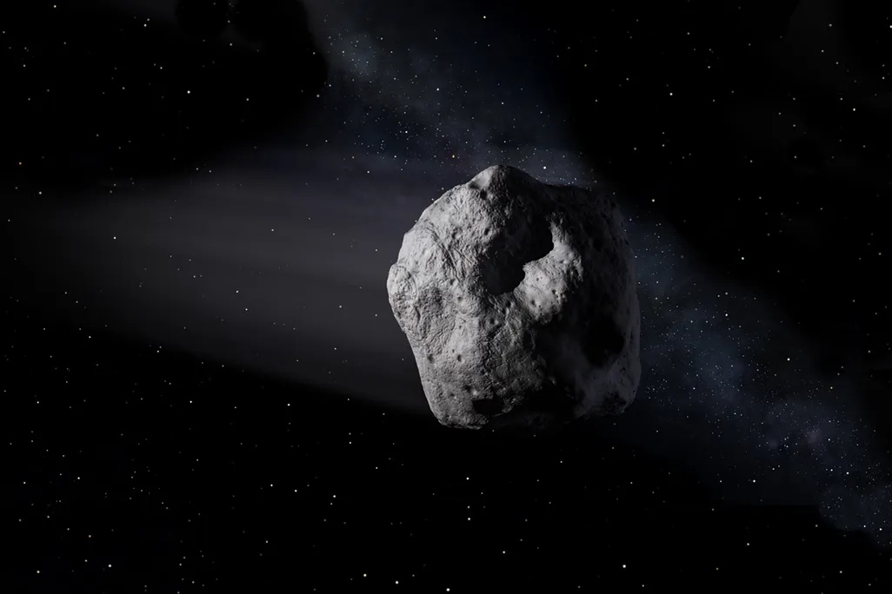
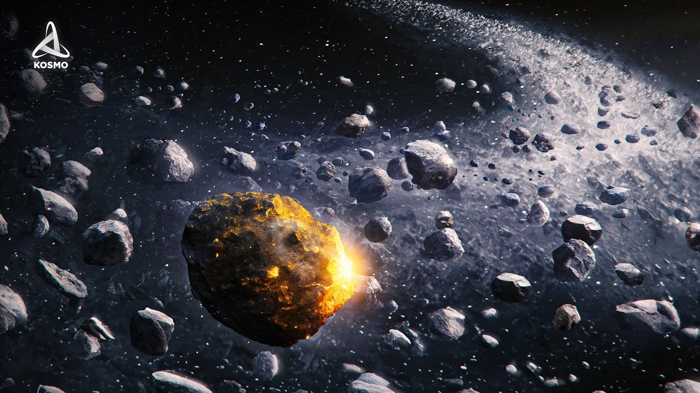

| Asteroid / Group | Key Characteristic |
|---|---|
| Ceres | The largest object in the asteroid belt, now classified as a dwarf planet. |
| Vesta | The second-largest asteroid, known for its bright surface and massive craters. |
| Near-Earth Asteroids | Asteroids whose orbits bring them dangerously close to Earth's pathway. |